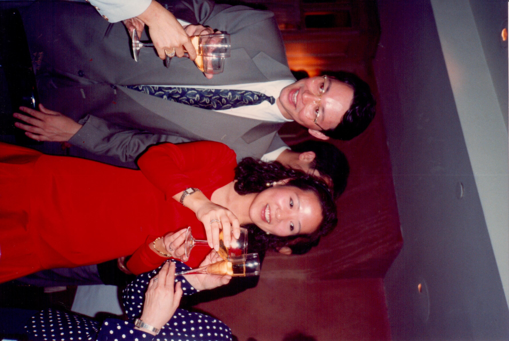

Mama Watch!
2026.007.01

I think my mom is like 麥太, nothing could ever stop her from caring for her children.
As 麥兜 would describe his Mom, “我媽媽真係好勁， 一個女人孭起成個世界”“My mom is really amazing, one woman carrying the entire world.” — McDull, in My Life as McDull 2001, my Mom is just the same.